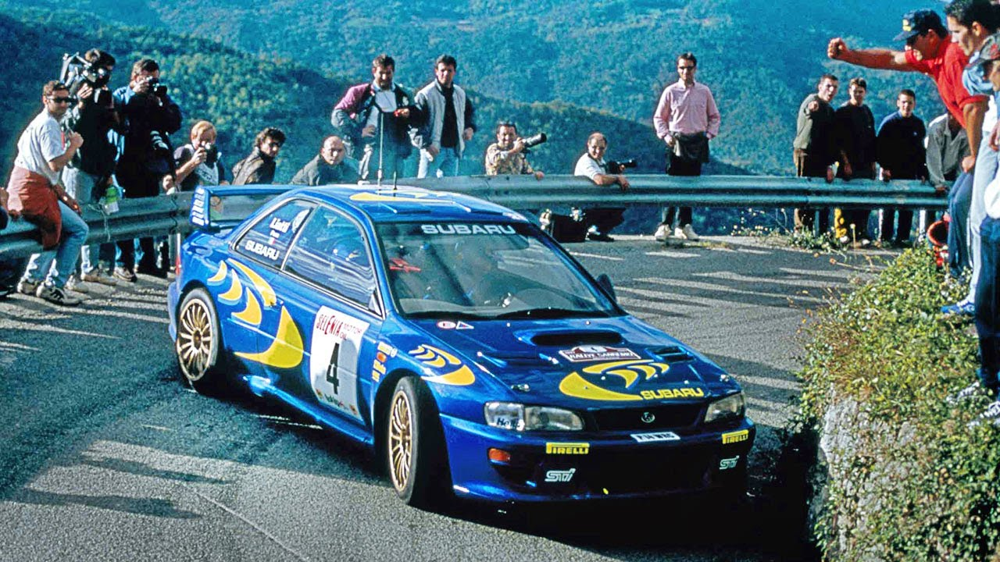

A rally egy széleskörű motorsport ág, amely különböző versenyeseményeket tartalmaz, mint például sebességi próbák (az Egyesült Államokban "rally versenynek" is nevezhetők), navigációs próbák, vagy annak képessége, hogy egy előírt időpontban vagy átlagsebességgel elérjük a mérföldköveket vagy egy célt. A rallyk lehetnek rövidek, egyetlen helyszínen végzett próbák formájában, vagy akár több ezer mérföldesek egy extrém állóképességi rallyban. A formátumtól függően a rallykat szervezhetik magánutakon vagy közutakon, nyitva vagy zárva a forgalom előtt, vagy terepen, mint például cross-country vagy rally-raid formában. A versenyzők használhatják a sorozatgyártású járműveket, amelyeknek közúti forgalomban való használatra jogszerűnek kell lenniük, vagy speciálisan épített versenyautókat, amelyek alkalmasak a meghatározott terepek leküzdésére. A rallytipikusan különbözik más motorsportoktól abban, hogy nem közvetlenül más versenyzőkkel szemben zajlik egy pályán, hanem pont-pont formátumban, amelyben a résztvevők rendszeres időközönként indulnak egy vagy több rajtpontból.
Egy Hyundai i20 a WRC egyik különleges szakaszán
Rally története
A rallyversenyzés történelme több mint egy évszázados múltra tekint vissza, és számos fontos mérföldkővel rendelkezik.
Kezdetek (1900-as évek eleje):
A rally versenyek gyökerei az autósport korai éveire nyúlnak vissza. Az első "rallyk" még inkább távolsági, hosszú utazások voltak, mintsem versenyek. Az első ilyen típusú megmérettetés 1907-ben zajlott, amikor a Párizs–Peking rallyt megrendezték, amely több ezer kilométeres túra volt, és a legnagyobb kihívást a különböző terepviszonyok és az autók megbízhatósága jelentette.
Egy kép a 1912-es Monte Carlo-i rally-ról
1920-1930-as évek:
A 20. század húszas éveire a rallyk egyre népszerűbbé váltak Európában, és elkezdtek kialakulni a modern rallyversenyek alapjai. Ekkor indultak olyan híres versenyek, mint a Monte Carlo Rally (1911), amely máig a legismertebb és legnehezebb rallyk közé tartozik. A versenyek általában hosszú távú, több ezer kilométeres, különböző terepeken zajlottak, és az autók nemcsak sebességi próbákon vettek részt, hanem navigációs kihívásokkal is szembe kellett nézniük.
Egy kép a 1935-ös Monte Carlo-i rally nyertes autójáról, a Renault Nervasportról.
1940-1950-es évek:
A második világháború után, az 1950-es évekre a rallyversenyek újra reneszánszukat élték. Ebben az időszakban a gyártók is egyre inkább beléptek a versenysportba, próbálva kiemelkedni a megbízhatóság és a sebesség terén. Ekkor indultak el olyan klasszikus versenyek, mint a Rali di Sardegna és az 1953-as Rallye Monte Carlo, és a gyártók, mint a Peugeot és a Citroën, a versenyek révén is tesztelték autóik teljesítményét.
1954-es Monte Carlo-i rally
1960-1970-es évek:
A rallyversenyzés a '60-as és '70-es évekre még inkább a technológiai fejlődés színterévé vált, hiszen az autók egyre fejlettebbé váltak. Az 1960-as évek végén jelentek meg az első népszerű nemzetközi rally sorozatok, mint a FIA Rally Világbajnokság előfutárának számító nemzeti bajnokságok. Az autók is egyre erősebbek lettek, és a versenyek is egyre kemikálisan és fizikailag is extrémebbé váltak. A híres 1970-es évek rali sztárjai, mint a Lancia és a Ford, már dedikált versenyautókkal indultak.
Egy 1972-es Toyota Corolla
1980-as évek - a Group B:
A 80-as évek elejére a rallyversenyzés a legnagyobb technológiai és teljesítménybeli fejlődésen ment keresztül, főként a Group B szabályok megjelenésével. Az új, szupersportautókat gyártó csapatok, mint a Audi, Peugeot, és Lancia, olyan autókat alkottak, amelyek több mint 500 lóerőt képesek voltak kihozni a tereprali pályákon. Bár rendkívül látványosak és izgalmasak voltak, a Group B autók rendkívül veszélyesek voltak, és több tragikus balesetet is okoztak. 1986-ra a FIA eltörölte ezt a csoportot, és újabb, biztonságosabb szabályokat vezetett be.
Az Audi Quattro, mindenidők egyik legikonikusabb rallyautója
1990-es évek és a modern rally:
Az 1990-es években a rallyversenyzés elkezdett egyre inkább a mai formáját ölteni. A WRC (Rali Világbajnokság) az egyik legnagyobb nemzetközi motorsport sorozattá vált, és a gyártók (például Subaru, Toyota, Mitsubishi) különböző autókat építettek kifejezetten a versenyekre. A modern rallyautók szigorúbb szabályoknak, mint például a hibrid technológiának és a biztonságot növelő előírásoknak felelnek meg. A versenyek szintén egyre inkább globális méretet öltöttek, új helyszíneken, mint Mexikóban, Kenyában és Új-Zélandon is megrendezésre kerültek.

A 2000-es évek legendás autója: A Subaru Impreza
A rallyversenyzés tehát a technológia, a versenyszellem és a bátor versenyzők kombinációja révén fejlődött, és ma már az egyik legnépszerűbb és legizgalmasabb motorsportágnak számít világszerte.